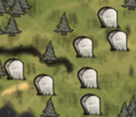

| Graveyard | |
|  |
|
| Abundant | |
| Occasional | |
| “ | It's full of dead stuff, I bet. | ” |
| –Willow | ||
An example of a Graveyard.
A Graveyard (or Cemetery) is found in one of the Forest patches of a world's Mosaic Biome with a layer of mist covering the ground. It contains numerous graves, both with and without headstones, and often features gold nuggets just lying on the ground. There are few trees in this biome and occasionally a few boulders, but no saplings or grass tufts are present.
Graveyards are a good source of gold, which can be found lying on the ground, and the numerous graves can be dug up and their contents traded to the Pig King for multiple gold nuggets. Graves can also contain red and blue gems, a Life Giving Amulet, and sometimes gears or nightmare fuel. However, digging too many graves will reduce a player's sanity level significantly. The graves in this biome can be used to reduce sanity in order to fight Shadow Creatures.
While digging a grave, the player has a 10% chance to encounter a Ghost, a slow but aggressive mob.
| Biomes | |
| Surface | Chess • Grasslands • Graveyard • Forest • Marsh • Mosaic • Ocean • Rockyland • Savanna • Desert • Deciduous Forest |
| Caves | Mushtree Forest • Rocky Plains • Stalagmite Biomes • Sunken Forest • Cave Swamps |
| Ruins | Abyss • Labyrinth • Military • Sacred • Village • Wilds |
| Related | Bridges • Map • Road (Trail) • Turfs |
{kind=link}